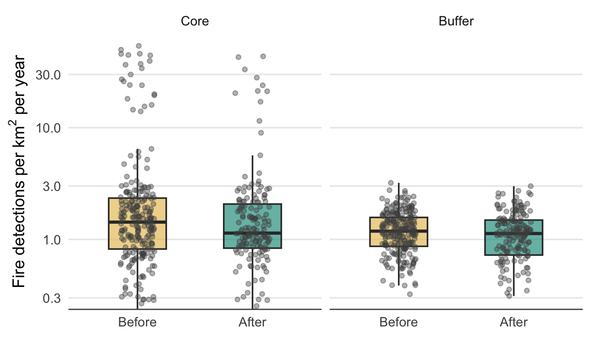
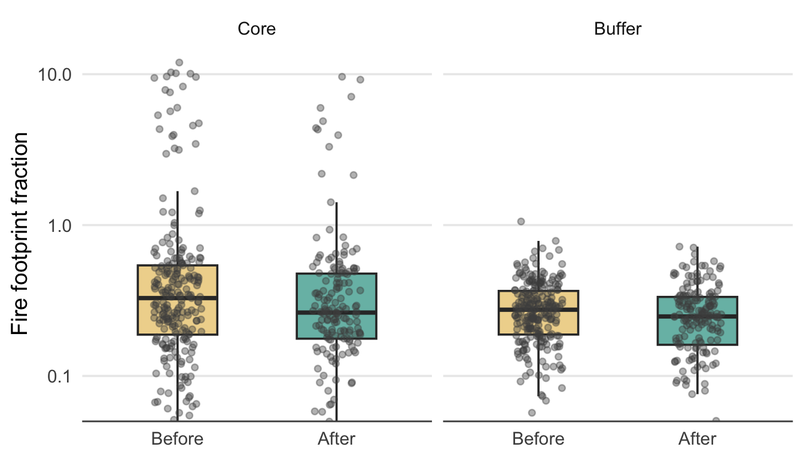
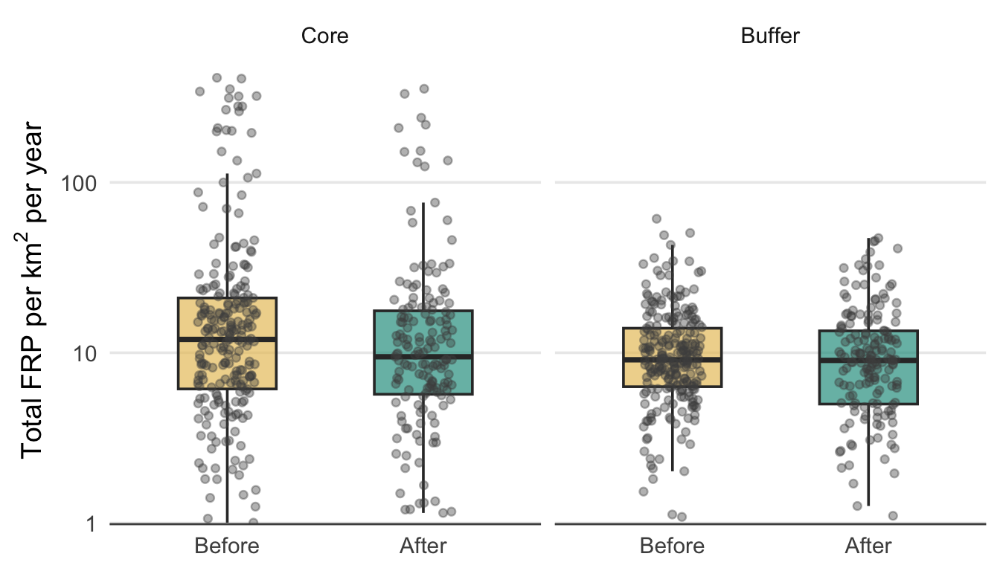
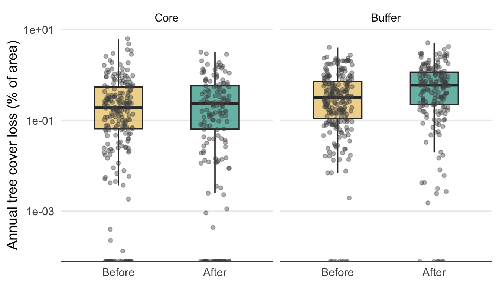
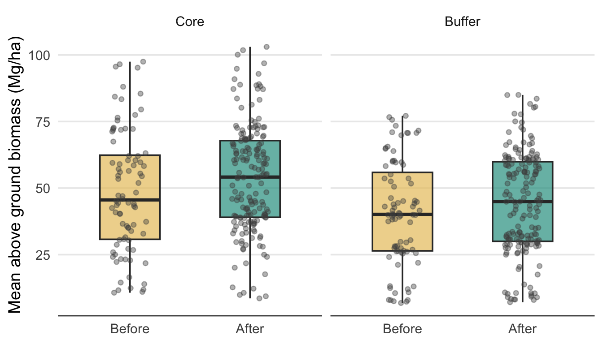

Remote Sensing Analysis
Summary
This chapter provides satellite-based evidence on the effects of CFM on fire, deforestation and above-ground biomass across the surveyed CFAs and 1 km wide buffer zones surrounding them. The analysis was based on a sample of 40 CFAs for which boundary data were available out of the 75 in the survey. Analyses used fire detection data (MODIS), tree cover loss data (Hansen Global Forest Change) and radar-based biomass estimates (Harrison et al, in prep), employing before-after models with a spatial core vs buffer control to assess leakage. Across all three fire metrics — detection density, burned area fraction and fire radiative power — there were statistically significant reductions within CFA cores following establishment. Moreover, none of the fire models found any significant Before–After × Zone interaction, indicating that there was no measurable displacement of burning from CFA cores into the surrounding buffer zones. According to the Hansen Global Forest Canopy dataset, tree cover loss rates within CFA cores did not decrease significantly following establishment. However, the baseline deforestation rates within CFA areas were already very low (median 0.14% per year), leaving limited scope for measurable decreases. There was a significant increase in tree cover loss in the 1 km buffer zones following CFA establishment, but this should be interpreted with caution. The global tree cover product is known to be unreliable in miombo woodlands, where canopy cover is naturally sparse and can vary seasonally. Hence, continued monitoring over a longer period or the development of a miombo specific tree cover product are recommended before conclusions are drawn. Above-ground biomass increased significantly in both CFA cores and buffer zones following CFMG establishment. For dry seasonal forests, biomass is a sensitive and ecologically meaningful indicator of forest condition, as it can detect incremental changes in tree recruitment and growth that gross deforestation metrics miss. Thus, these results support the community perspectives that forest condition is improving across a majority of CFAs, as well as in their buffer zones. In contrast to the results from the survey, the governance index was not a significant predictor in models of the remote sensed data. This may reflect biases in the responses to the survey, where better or worse governance led to differing impressions of SFM performance without actually being associated with different outcomes. Alternatively, it may be that the communities are responding to small scale changes that they can appreciate, but that the signal is not yet strong enough to be detected via remote sensing. The very low levels of baseline deforestation rates within CFAs raises a concern over the claims of additionality by carbon developers. It underlines the importance of moving from project based to jurisdictional estimates of carbon mitigation.
Introduction
The preceding chapter examined the effects of CFM on sustainable forest management based on community perceptions collected through FGDs and individual interviews. In this chapter we provide an independent assessment of CFM impacts on SFM using satellite-derived metrics. Remote sensing offers the advantage of objective, spatially consistent measurements that are free from reporting biases, and captures processes that may be difficult for community members to perceive and quantify. However, Earth observation data have their own limitations, including the spatial grain of remote sensed productions and the fact that the remote sensing does not directly measure the processes that generate the signals.
We analysed three categories of remote sensing data. Fire dynamics were assessed using MODIS active fire detection data (Giglio, Schroeder, and Justice 2016), from which we derived three complementary metrics: fire detection density (detections per km² per year), burned area as a fraction of total zone area, and total fire radiative power (FRP) per km² — a measure of fire energy release that reflects combustion intensity and therefore the volume of biomass consumed. Deforestation was quantified using Hansen Global Forest Change 2024 tree cover loss data (Hansen et al. 2013), expressed as the annual percentage of zone area experiencing tree cover loss. Above ground biomass was assessed using a time series of 100 m resolution biomass maps from 2018-2024, generated by calibrating a generalised additive model between field plot data and radar backscatter from ALOS-2 PALSAR-2 ScanSAR (Harrison et al. in prep). Boundary data were only available for 40 out of the 75 surveyed CFAs, so our remote sensing analyses were performed on this subset of the sample.
For each metric, we compared values before and after CFA establishment, using the formal establishment date of each CFMG. Fire and deforestation data covered the period 2014–2024. All analyses used linear mixed models (or, for the proportional burned area response, a Gamma generalised linear mixed model with a log link), with a random intercept for CFMG to account for the non-independence of repeated annual observations within the same CFA. We included the CFMG governance index as a fixed covariate to test whether governance quality moderated outcomes. To assess leakage — the displacement of forest-damaging activities into the areas surrounding CFAs — we included a 1 km buffer zone around each CFA as a spatial control and tested whether the Before–After change differed between core and buffer zones (i.e. the period × zone interaction). A non-significant interaction would indicate that changes in the buffer mirrored those in the CFA.
We hypothesised that from before to after establishment (i) in CFAs and (ii) in buffer zones; fire detection density, burned area and radiative power would decline, annual tree cover loss would decline, and biomass would increase. Thus, we expected the satellite data would independently confirm the community reports of reduced fire and improvements in forest condition. Following the predictions from the governance chapter, we also hypothesised that CFMGs with higher governance scores would show great improvements in these satellite derived SFM metrics. We included buffer zones around CFAs in the analysis to detect “leakage” — whether restrictions inside CFAs simply shifted harmful activities (fire, deforestation) to surrounding areas.
Fire incidence
| Model results for fire detection density (log-transformed) — before vs after establishment | |||
| Linear mixed model with random intercept for CFMG. Response = log(detections per km² + 1). Fixed effects: period (ref = Before) and governance index. CFA variance = 0.145; residual variance = 0.191. Marginal R² = 0.055; conditional R² = 0.463. n = 817. | |||
| Factor | Estimate | SE | P value |
|---|---|---|---|
| Intercept (Before, Core) | 1.098 | 0.161 | 0.0000 |
| After | −0.121 | 0.046 | 0.0083 |
| Buffer | −0.303 | 0.040 | 0.0000 |
| Governance index | −0.007 | 0.030 | 0.8290 |
| After × Buffer | 0.095 | 0.062 | 0.1278 |
On average, fire incidence was significantly reduced following the establishment of a CFA and this effect was similar inside the CFA and within its buffer zone. Interestingly, on average fire incidence was lower in the buffer zone compared to the CFA. The Governance Index did not have an significant effect on these outcomes.
Burned area

| Model results for fire footprint fraction — Core vs Buffer, before vs after establishment | |||
| Gamma GLMM with log link and random intercept for CFMG. Fixed effects: period (ref = Before), zone (ref = Core), period × zone interaction (After × Buffer = leakage test), and governance index. CFMG variance = 0.582. Marginal R² = 0.032; conditional R² = 0.68. n = 817. | |||
| Factor | Estimate | SE | P value |
|---|---|---|---|
| Intercept (Before, Core) | −0.774 | 0.307 | 0.0118 |
| After | −0.181 | 0.068 | 0.0073 |
| Buffer | −0.318 | 0.062 | 0.0000 |
| Governance index | −0.026 | 0.058 | 0.6603 |
| After × Buffer | 0.086 | 0.091 | 0.3481 |
The results for burned area mirrored those obtained for fire incidence. The burned area declined following establishment of community forestry in both CFAs and buffer zones. There was no significant effect of Governance Index on the burned area.
Fire radiative power

| Model results for total FRP per km² (log-transformed) — Core vs Buffer, before vs after establishment | |||
| Linear mixed model with random intercept for CFMG. Response = log(total FRP / zone area + 1). Fixed effects: period (ref = Before), zone (ref = Core), period × zone interaction (After × Buffer = leakage test), and governance index. CFMG variance = 0.381; residual variance = 0.549. Marginal R² = 0.029; conditional R² = 0.426. n = 817. | |||
| Factor | Estimate | SE | P value |
|---|---|---|---|
| Intercept (Before, Core) | 2.748 | 0.261 | 0.0000 |
| After | −0.219 | 0.078 | 0.0050 |
| Buffer | −0.298 | 0.068 | 0.0000 |
| Governance index | −0.028 | 0.049 | 0.5738 |
| After × Buffer | 0.110 | 0.105 | 0.2991 |
Again, the results for fire radiative power mirrored those obtained for fire incidence.
Deforestation

| Model results for annual tree cover loss rate (log-transformed) — core vs buffer, before vs after | |||
| Linear mixed model with random intercept for CFMG. Response = log(annual loss % + 1). Fixed effects: period (ref = Before), zone (ref = Core), their interaction, and governance index. A significant After × Buffer interaction indicates leakage. CFMG variance = 0.065; residual variance = 0.063. Marginal R² = 0.086; conditional R² = 0.55. n = 803. | |||
| Factor | Estimate | SE | P value |
|---|---|---|---|
| Intercept (Before, Core) | 0.323 | 0.106 | 0.0044 |
| After | −0.010 | 0.026 | 0.7087 |
| Buffer | 0.103 | 0.024 | 0.0000 |
| Governance index | −0.015 | 0.020 | 0.4737 |
| After × Buffer | 0.170 | 0.036 | 0.0000 |
The rate of tree cover loss, as measured using the Hansen Global Forest Watch data set, did not change significantly within the CFA zones following the establishment of community forestry, but increased significantly in the 1 km buffer zones. The Governance Index did not have any significant effect.
Above ground biomass

| Model results for mean above ground biomass — core vs buffer, before vs after establishment | |||
| Linear mixed model with random intercept for CFA. Fixed effects: period (ref = Before), zone (ref = Core), their interaction, and governance index. A significant After × Buffer interaction indicates leakage. CFA variance = 363.972; residual variance = 59.557. Marginal R² = 0.052; conditional R² = 0.867. n = 518. | |||
| Factor | Estimate | SE | P value |
|---|---|---|---|
| Intercept (Before, Core) | 49.880 | 7.815 | 0.0000 |
| After | 4.480 | 1.087 | 0.0000 |
| Buffer | −7.974 | 1.191 | 0.0000 |
| Governance index | −0.181 | 1.482 | 0.9035 |
| After × Buffer | −1.302 | 1.449 | 0.3692 |
Above ground biomass, as measured using radar backscatter, increased in both CFA core areas and their buffer zones following establishment of community forestry. There was no significant effect of Governance Index.
Discussion
Across all three fire metrics — detection density, burned area fraction, and fire radiative power — there were significant reductions in CFA cores following establishment. These results provide robust, satellite-based confirmation that CFM has led to meaningful improvements in fire management. Importantly, in none of the fire models was the After × Buffer interaction significant, indicating that there was no measurable displacement of burning into the surrounding buffer zones. In fact, the mirrored results in the buffer zones suggests a positive leakage effect. That is, community fire management extends beyond the CFA boundary. These results are consistent with the SFM chapter findings.
According to the Hansen data, tree cover loss rates in CFA cores did not decrease significantly following establishment. This is in contrast to the community perceptions documented in the preceding chapter and also with the results obtained for biomass which showed that biomass increased in both CFA core areas and buffer zones. Several explanations for this discrepancy are possible. First, the landsat derived tree cover data are often not reliable for miombo woodlands and other savannas, where tree cover is sparse and the relative strength of the grass versus tree canopy signal can vary seasonally. Second, the median rates of tree cover loss within the CFA core area varied from 0.14% before establishment to 0.13% afterwards. Thus, the deforestation rate was already very low before establishment and the change is in the desirable direction, even if it was small and non significant. Meanwhile, communities may perceive improvements through indirect process-based indicators — such as reduced charcoal production or fewer incursions — that may take time to reflect in remote sensed data. The significant increase in deforestation in the buffer zones from a median of 0.26% before to 0.49% afterwards is a concern. However, as mentioned above canopy cover is not always reliably measured, especially in low tree cover environments. For example, where farmers clear scrub as part of a crop rotation cycle, it may register as tree canopy cover loss but in fact be located in previously deforested areas. Thus, this result should be interpreted with caution. We recommend tracking tree cover change over a longer period and if possible developing a miombo specific tree canopy cover product.
Currently, in seasonal dry forests biomass change is a more reliable indicator than tree cover change. However, it is also important to note that they measure different attributes. Biomass monitoring is able to detect small changes caused, for example, through the harvesting of individual trees, but tree growth and recruitment across the entire zone may cancel out small losses. Nevertheless, above-ground biomass increased significantly in CFA cores and buffer zones after establishment. The biomass gain is consistent with — and may be largely attributable to — the reductions in fire disturbance documented above. Fire both kills trees directly and suppresses recruitment of woody species, so even modest reductions in annual burning can lead to measurable biomass accumulation.
The Governance Index was not a significant predictor of any outcome, in contrast to the SFM chapter where governance quality strongly predicted community perceptions of reduced fire frequency and deforestation. As discussed above, this could be because communities are focusing on process-based indicators, which may be more sensitive to governance quality. If this is the case, it may be too early to detect an effect of the governance quality in the remote sensed data. Alternative, community members may be biasing their responses based on the perception of the governance, when there is no actual real effect (or it is very weak). Indeed, both these possibilities may be true at the same time. Longer term tracking of governance and remote sensing outcomes may be necessary to resolve this.
The fact that the baseline tree canopy cover loss rate in CFAs was very low calls into question the validity of addtionality claims by carbon developers. Given that ~80% of CFAs were established for generating carbon credits, this is concerning. It underscores the necessity of moving from project based accounting to a jurisdictional approach.
Taken together, the remote sensing evidence presents a nuanced picture of CFM effectiveness in Zambia. CFM has demonstrably reduced fire disturbance and has produced measurable gains in above-ground biomass — without evidence of displacement into surrounding buffer areas. However, there has not been any measurable decrease in deforestation — as detected through the Global Forest Canopy dataset — and there is an indication that deforestation may have increased in buffer areas, although this requires further investigation.
References
Giglio, L., W. Schroeder, and C. O. Justice. 2016. “The Collection 6 MODIS Active Fire Detection Algorithm and Fire Characterization Study.” Remote Sensing of Environment 178: 31–41. https://doi.org/10.1016/j.rse.2016.02.054.
Hansen, M. C., P. V. Potapov, R. Moore, M. Hancher, S. A. Turubanova, A. Tyukavina, D. Thau, et al. 2013. “High-Resolution Global Maps of 21st-Century Forest Cover Change.” Science 342 (6160): 850–53. https://doi.org/10.1126/science.1244693.
Harrison, S. B., J. L. Godlee, D. T. Milodowski, et al. in prep. “Carbon Accumulation in Tropical Dry Forests and Savannas Despite Widespread Land Cover Change, Revealed by Radar Remote Sensing.”